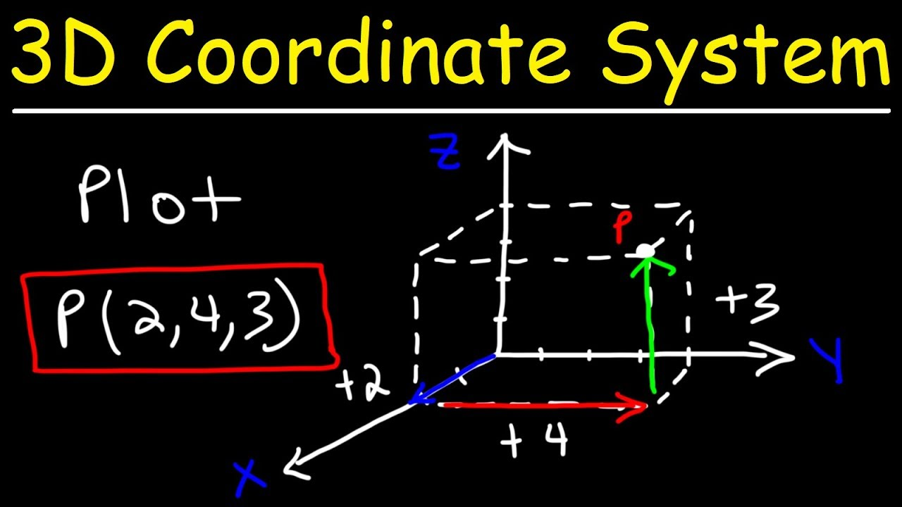

Les coordonnées sont l'un des concepts les plus important pour le développement de jeu. La position en 2D d'un objet peut être facilement représentée à l'aide d'un indice de position en axe x (représentant par convention la position de gauche à droite), et un de position en y (conventionellement de bas en haut). Un univers en 3 dimensions peut aussi être représenté par une dimension de plus (représentant la profondeur).
Les coordonnées permettent de définir les positions d'objets dans un jeu, et on peut aussi en faire dériver des vecteurs, des droites, et des fonctions pouvant représenter des déplacements de tout genre.